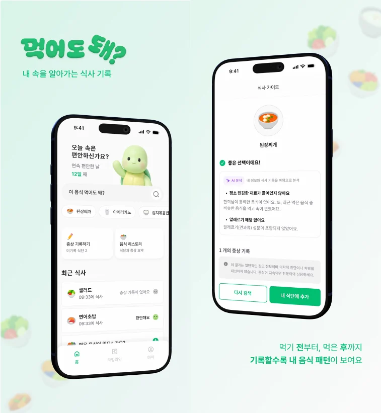

먹어도돼? - 위장질환 관리 식단 앱
만성 위장 질환(역류성 식도염)이 있는 사람이 먹기 전에 음식을 검색하고, 먹은 뒤 증상을 기록하는 앱입니다.
제가 직접 겪은 불편함에서 아이디어를 내고 핵심 기능 설계부터 참여했습니다. App Store와 Google Play에 출시해 운영 중입니다.

기여한 내용
백엔드로 도메인 설계부터 API까지 구현
- 회원, 식사 기록, 증상, 알림 예약 전체 도메인 데이터베이스 테이블 설계
- 마지막 음식을 삭제하면 끼니와 연결된 증상 기록까지 함께 삭제해 고아 데이터 방지
- UUID는 외부 노출용, 내부 기본키는 조인용으로 분리해 사용자 수와 생성 순서 추정 방지
소셜 로그인 시 플랫폼 서버 의존을 제거하여 로그인 지연과 rate limit 위험 차단
- 로그인마다 사용자 정보 API를 호출하면 지연과 rate limit에 노출되어 ID Token 서명 검증 방식 선택
- 플랫폼 공개키를 Caffeine 로컬 캐시에 저장해 캐시 적중 시 외부 호출 없이 검증
- 템플릿 메서드 패턴으로 공통 검증 흐름은 부모 클래스에, 플랫폼별 값만 하위 클래스에 분리해 새 소셜 로그인을 클래스 추가만으로 지원
검색 서버 없이 자모 분해와 trigram 유사도로 음식 검색 오타 보정
- Elasticsearch 없이 pg_trgm으로 오타 보정 검색 구현, 검색 서버 비용 절감
- 자모 분해와 trigram 유사도로 오타가 있어도 비슷한 음식 검색
- GIN 인덱스를 CONCURRENTLY로 생성하여 쓰기 잠금 방지, 정확 일치가 부족할 때만 유사 후보 추가
트랜잭션 분리와 CircuitBreaker로 Gemini 호출 중 DB 연결 점유 최대 3초에서 0초로 감소
- Retry와 CircuitBreaker로 장애 차단, 장애 시 기본값 CAUTION으로 응답 유지 (회로 차단은 테스트로 확인)
- Gemini 호출을 트랜잭션 밖으로 분리해 DB 연결 점유 방지 블로그
- 버전 비교로 늦게 끝난 이전 분석이 최신 증상 데이터의 결과를 덮는 문제 방지
운영 중 오류모니터링을 위한 Sentry와 Better Stack 구성
- 5xx만 Sentry로 전송하여 예외 알림 누락 해결, traceId로 요청 단위 로그 추적
- Railway에서는 Prometheus가 앱에 접근할 수 없어, JVM 메모리, GC 지표를 30초마다 Better Stack OTLP로 전송 블로그
기획 단계부터 애자일한 프로세스로 유연한 운영, 지속적인 개선
- 매주 스프린트 회고와 계획 회의로 우선순위를 조정
- 출시 목표가 명확한 프로젝트로 애자일하게 진행하여 3개월 이내 App Store, Google Play 출시
AI 개발 규칙을 스킬과 훅으로 강제
- 코드 리뷰, 보안 점검, 테스트 작성 같은 기준을 Claude Code 스킬 12개로 만들어 사용
- Claude Code 훅 4종으로 ktlint 위반 피드백, DTO 편집은 사람 승인, 위험 명령 차단, 커밋 컨벤션 검사
- 모든 판단을 decisions.log에 기록
기술 선택과 이유
- Kotlin: null 안정성으로 NPE를 컴파일 단계에서 막고, sealed class로 DTO를 표현하여 분기 누락을 잡기 위해 사용했습니다.
- Railway: 인프라 관리 부담 없이 빠르게 출시하려고 AWS, GCP 대신 PaaS를 선택했습니다.
- Better Stack(OTLP): Railway에서는 Prometheus가 앱에 접근할 수 없어, 앱이 30초마다 지표를 보내는 push 방식으로 구성했습니다.
- Sentry: 배포 후 발생한 예외를 로컬 재현 없이 운영 환경에서 바로 확인하기 위해 사용했습니다.
- PostgreSQL pg_trgm: Elasticsearch 컨테이너를 따로 띄우는 비용을 아끼기 위해, 이미 쓰고 있는 PostgreSQL의 확장으로 오타 보정을 구현했습니다.